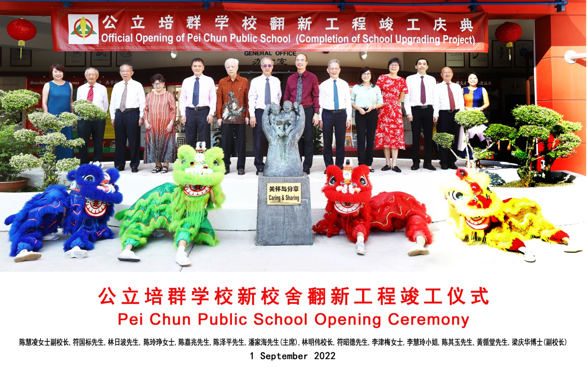
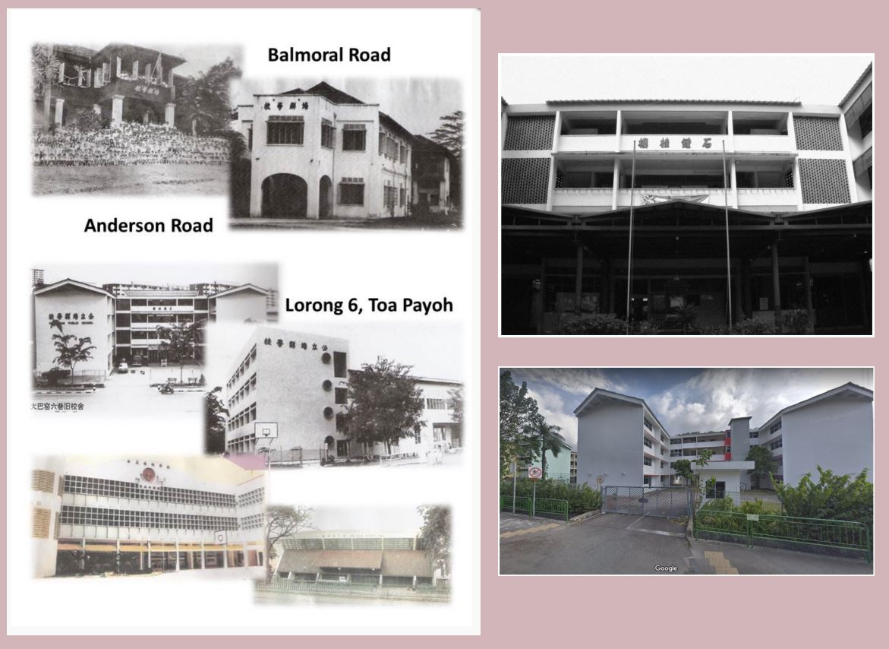

| Home | Food | Projects | School |
|---|
Hello, my name is Joash and this is my School:.
A School Started by the Community for the Community Established in 1933, Pei Chun Public School was started by a group of Hainanese who wanted to provide an education for the children of the Chinese working class. As the only school in Singapore bearing the word “Public”, the school name clearly signifies the intent of its founders - a school started by the community for the community. Such conviction remains unchanged over the past 85 years and it continues to deepen as the school forges ahead. The school became a government-aided school in 1956. With its unique Chinese Culture and rich tradition as a Chinese medium school in its early days, the school was accorded the Special Assistance Plan (SAP) status in 1990. In 2001, the school moved to its current premise in Toa Payoh Lorong 7. Through the years, the school prides itself in providing a bilingual and holistic education. In 2017, the school embarked on the Primary Education Review and Implementation (PERI) Upgrading so as to enhance its infrastructure to facilitate the school transition to a single session school. In view of the extensive upgrading works, the school moved to a holding site at 580 Toa Payoh East at the end of 2016. This shift marked an important milestone in the schools journey as new facilities were added to the school site such as an indoor playing field which is a first of its kind in Singapore primary schools. With the enhanced infrastructure, Pei Chun is well positioned to enrich the learning experiences of its students so as to achieve its mission of providing a holistic education for all students. The school has moved back to Toa Payoh Lorong 7 in 2019 and has transited to a single session school in 2020. Pei Chun could not be what it is today if not for the support of its stakeholders - parents, staff, alumni, School Management Committee as well as various partners in education. With their strong support and partnership, Pei Chun will continue to live up to its name and its founders vision of providing quality education for future generations, reaffirming the intent of its founders of being a school started by the community for the community.
What is the history of Pei Chun Public School? The school became a government-aided school in 1956. With its unique Chinese Culture and rich tradition as a Chinese medium school in its early days, the school was accorded the Special Assistance Plan (SAP) status in 1990. In 2001, the school moved to its current premise in Toa Payoh Lorong 7.Pei Chun began as a Chinese medium school with 90 students at Tanglin Road on 12 May 1933. The school has moved to different locations, before settling in Toa Payoh in 1970. The Toa Payoh premises were officially opened on 29 June 1973 and underwent further expansion in the 1980s. In 1990, Pei Chun became one of the 10 Special Assistance Plan (SAP) primary schools in Singapore. The school moved to a new building in 2001. 1933 Began as a Chinese medium school at Tanglin Road with 90 students. 1935 Moved to a shophouse in Orchard Road with an enrolment of 100 students. 1941 Mr Foo Tuck Sun was appointed as the 6th Principal. Enrolment increased to 200 students. School stopped functioning because of the Japanese invasion of Singapore. 1946 Resumed in an old bungalow at Anderson Road with more than 300 students. 1947 Moved to a bungalow at Balmoral Road. 1949 Bought the Balmoral Road premises after a bank loan of $40,000 was granted. 1952 More than $30,000 was raised by the school, teachers and pupils to improve the facilities of the school. 1956 Became a government-aided primary school. 1960-1961 The school was faced with two problems outstanding arrears in bank loan and constant flooding during rainy seasons. 1962-1965 $71,000 was raised and for the first time, Pei Chun had its own premises. This was not a good site because of constant flooding. The school management committee looked for an alternative site. 1969 MOE offered a piece of land to Pei Chun at Toa Payoh Lorong 6. 1970 Started its operations in Toa Payoh. 1973 Official opening of the new school at Toa Payoh. 1980 Official opening of the 1st expansion of school building.The four storey new building includes a Science Laboratory, dance studio, language laboratory, theatre and classrooms. 1983 Produced National top PSLE student with an aggregate score of 420. 1989 Celebration of completion of the Indoor Sports Hall, built at a cost of over $1,000,000. 1989 Produced 1st Presidents Scholar. 1990 Selected to be one of the 10 SAP primary schools in Singapore. 1992 Achieved 100% Passes in PSLE for the first time in the history of Pei Chun. 1993 Celebrated 60th Founders Day with a grand dinner with 1730 guests. 1994 Ground-breaking ceremony for another expansion programme.The 3 storey high building included a new general office, computer laboratories and classroom. Old Students Association was formed. 1995 Triple celebrations completion of new building, 62nd Founders Day and official establishment of Old Students Association. The new building was opened by the Minister of Communications, Mr Mah Bow Tan. 1996 Bronze statue of 12th SMC Chairman, Mr Chao Yoke San, was erected in the school grounds. SMC 12th Chairman, Mr Chao Yoke San stepped down as Chairman after serving for 40 years and became Honorary Chairman and Executive Advisor till he died in December 2001. 1998 Carnival held featuring traditional food, games and handicraft to commemorate 65th Founders Day. Celebrated 65th Founders Day with a grand dinner for 1,500 guests. 2001 Completed PRIME and moved to its new building in Lorong 7 Toa Payoh. 2002 Produced 2nd Presidents Scholar. Achieved the Sustained Achievement Awards (Arts) for continuous excellent performance by the schools choir and Chinese Dance Troupe. Seventh Principal, Mr Chen Keng Juan retired after serving Pei Chun for 31 years. Mr Chin Kim Woon became the 8th Principal. 2003 Pei Chuns Chinese Orchestra held a sell-out inaugural public performance at the Singapore Conference Hall. Achieved Sustained Achievement Awards (Sports) for continuous excellent performance by the Schools Volleyball and Table-tennis teams. Achieved Gold Award for Physical Fitness. Official Opening of Pei Chuns new school building cum 70th Founders Day Celebration - the Guest of Honour was the Minister for Education and Second Minister for Defence, Mr Teo Chee Hean. Official Opening of Pei Chun Heritage Loft - the Guest of Honour was Minister of State for MOE and MCYS, Mr Chan Soo Sen. 2004 Held a concert “On Wings of Colour I” in the school air-conditioned hall to commemorate 71st Founders Day. The Guest of Honour was Mr Wee Heng Tin, former DGE, who is an ex-pupil of Pei Chun. 2005 Awarded “Programme for School-based Excellence (PSE)” by MOE for Pei Chuns Sports Talent Identification and Nurturing Programme. Celebrated 72nd Founders Day with a Learning Carnival and Family Day. Official Opening of South Zone Centre of Excellence for Chinese Language by DGE, Ms Seah Jiak Joo. The only primary school to be awarded SAA in all 3 categories in Aesthetics, Sports and Physical Fitness. 2006 Awarded Programme for School-based Excellence by MOE for the 2nd time for Pei Chuns Sports Talent Identification and Nurturing Programme. Celebration of 73rd Founders Day, Official Opening of Pei Chuns new Sports Hall and 12th Anniversary of Pei Chun Old Students Association the official opening included the opening of the Alumni Room which is within the New Sports Hall. The Guest of Honour was Mr Tharman Shanmugaratnam, Minister of Education and Second Minister for Finance. Pei Chun Old Students Association 12th Anniversary and opening of Alumni Room Souvenir Magazine was published. Awarded Singapore Quality Class (SQC) by SPRING Singapore. Achieved Sustained Achievement Award for Sports and Sustained Achievement Award for Physical Fitness。 2007 Old Students Association was renamed Alumni Association. A logo for the Alumni Association was launched. Chinese Orchestra Public Performance 2007 jointly organized by Pei Chun Public School and The Singapore Chinese Schools Conference (SCSC) at Victoria Concert Hall - the Guest of Honour was the Minister of State for MND, Ms Grace Fu. Awarded Programme for School-based Excellence by MOE for the 3rd time for Pei Chuns Sports Talent Identification and Nurturing Programme. Celebrated 74th Founders Day with a Learning Fair and Family Day. Official Opening of South Zone Centre of Excellence for Sports - the Guest of Honour was Mr Gan Kim Yong, Minister of State for Education and Manpower. MOE awarded Pei Chun for School Distinction Award, one of the top two awards given by MOE for the school's outstanding academic and non-academic achievements over the past years. The school received the Best Practice Award in teaching and learning. 2008 Celebrated 75th Founders Day Celebration - Sealing of the Time Capsule by Dr Chau Sik Ting (BBM), Chairman of the School Management Committee. Awarded Programme for School-based Excellence by MOE for the 4th time for Pei Chuns Sports Talent Identification and Nurturing Programme. Celebrated 75th Founders Day Celebration - Concert “On Wings of Colour II” at the University Cultural Centre - Guest of Honour was Minister for Education and Second Minister for Defence, Dr Ng Eng Hen. Read more about this topic: Pei Chun Public School Famous quotes containing the word history: “Considered in its entirety, psychoanalysis wont do. Its an end product, moreover, like a dinosaur or a zeppelin; no better theory can ever be erected on its ruins, which will remain for ever one of the saddest and strangest of all landmarks in the history of twentieth-century thought.” —Peter B. Medawar (1915 to 1987) “When we of the so-called better classes are scared as men were never scared in history at material ugliness and hardship; when we put off marriage until our house can be artistic, and quake at the thought of having a child without a bank-account and doomed to manual labor, it is time for thinking men to protest against so unmanly and irreligious a state of opinion.” —William James (1842 to 1910) “All history attests that man has subjected woman to his will, used her as a means to promote his selfish gratification, to minister to his sensual pleasures, to be instrumental in promoting his comfort; but never has he desired to elevate her to that rank she was created to fill. He has done all he could to debase and enslave her mind; and now he looks triumphantly on the ruin he has wrought, and say, the being he has thus deeply injured is his inferior.” —Sarah M. Grimke (1792 to 1873)
